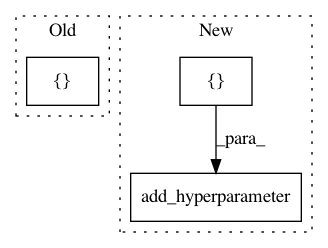

8fd35f58ddb570ce1cf628a48358e4239836cf97,ParamSklearn/components/preprocessing/liblinear_svc_preprocessor.py,LibLinear_Preprocessor,get_hyperparameter_search_space,#Any#,80
Before Change
def get_hyperparameter_search_space(dataset_properties=None):
penalty = CategoricalHyperparameter("penalty", ["l1", "l2"],
default="l2")
loss = CategoricalHyperparameter("loss", ["l1", "l2"], default="l2")
dual = Constant("dual", "False")
// This is set ad-how
tol = UniformFloatHyperparameter("tol", 1e-5, 1e-1, default=1e-4,
After Change
penalty = cs.add_hyperparameter(CategoricalHyperparameter(
"penalty", ["l1", "l2"], default="l2"))
loss = cs.add_hyperparameter(CategoricalHyperparameter(
"loss", ["hinge", "squared_hinge"], default="squared_hinge"))
dual = cs.add_hyperparameter(Constant("dual", "False"))
// This is set ad-hoc
tol = cs.add_hyperparameter(UniformFloatHyperparameter(
"tol", 1e-5, 1e-1, default=1e-4, log=True))
In pattern: SUPERPATTERN
Frequency: 4
Non-data size: 3
Instances
Project Name: automl/auto-sklearn
Commit Name: 8fd35f58ddb570ce1cf628a48358e4239836cf97
Time: 2015-10-01
Author: feurerm@informatik.uni-freiburg.de
File Name: ParamSklearn/components/preprocessing/liblinear_svc_preprocessor.py
Class Name: LibLinear_Preprocessor
Method Name: get_hyperparameter_search_space
Project Name: automl/auto-sklearn
Commit Name: 35a9d4d6148f5933db0e3dfda23d8f0acf0403ba
Time: 2014-11-14
Author: feurerm@informatik.uni-freiburg.de
File Name: AutoSklearn/components/classification/random_forest.py
Class Name: RandomForest
Method Name: get_hyperparameter_search_space
Project Name: automl/auto-sklearn
Commit Name: 35a9d4d6148f5933db0e3dfda23d8f0acf0403ba
Time: 2014-11-14
Author: feurerm@informatik.uni-freiburg.de
File Name: AutoSklearn/components/classification/liblinear.py
Class Name: LibLinear_SVC
Method Name: get_hyperparameter_search_space
Project Name: automl/auto-sklearn
Commit Name: b415da9acc4bf95960aaaa16c414be120e6c8ffc
Time: 2015-10-01
Author: feurerm@informatik.uni-freiburg.de
File Name: ParamSklearn/components/classification/liblinear_svc.py
Class Name: LibLinear_SVC
Method Name: get_hyperparameter_search_space